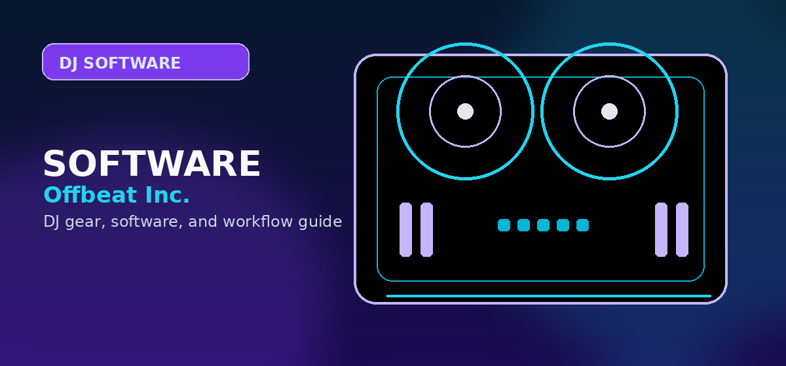

Best DJ Software
A current DJ software decision guide covering rekordbox, Serato DJ Pro, djay Pro, Traktor Pro/Play, VirtualDJ, Mixxx, and streaming compatibility in 2026.

Disclosure: This page uses affiliate links. We may earn a commission at no extra cost to you. Full disclosure →
A current DJ software decision guide covering rekordbox, Serato DJ Pro, djay Pro, Traktor Pro/Play, VirtualDJ, Mixxx, and streaming compatibility in 2026.
Best DJ software by real use case
The software decision now has to account for streaming, controller unlocks, stems, library management, phone/tablet support, and whether the DJ is preparing for club gear or playing open-format gigs. Treat this page as the canonical software parent. Specific reviews should link back here instead of competing for the same “best DJ software” intent.
| Software | Best for | Strength | Watch-outs |
|---|---|---|---|
| rekordbox | AlphaTheta/Pioneer ecosystem, CDJ prep, beginner-to-club path | Hardware continuity and library prep for club workflows | Plan tiers and feature unlocks can confuse beginners |
| Serato DJ Pro | Open-format, scratch, stems, battle controllers, mobile DJs | Performance workflow and broad hardware ecosystem | Some controllers require paid unlocks or licenses |
| djay Pro | Streaming-first, Apple Music/Spotify users, phone/tablet DJs | Modern app feel, broad platform support, Automix, hardware support | Some advanced features are restricted with streaming tracks |
| Traktor Pro / Play | Electronic music, effects, looping, pattern/stem workflows | Creative performance tools and a new beginner Play path | Hardware ecosystem is narrower than rekordbox/Serato |
| VirtualDJ | Flexible hardware support, karaoke/video/event utility | Versatile and powerful for mobile/event work | Less aligned with club-standard prep than rekordbox |
| Mixxx | Free/open-source experimentation | No-cost learning and open-source flexibility | More DIY configuration and weaker commercial funnel |
Software recommendations
rekordbox
Choose rekordbox when the you want the most direct bridge from a beginner AlphaTheta controller to USB preparation and club-standard Pioneer/AlphaTheta ecosystems. It is the safest recommendation for readers already leaning toward FLX4, GRV6, XDJ-AZ, OMNIS-DUO, or CDJ workflows.
Serato DJ Pro
Choose Serato for open-format gigs, battle layouts, stems-focused performance, RANE controllers, and a wide range of third-party hardware. Serato also matters more now that streaming compatibility and library workflows have become central to software choice.
djay Pro
Choose djay Pro for Apple Music and Spotify-first users who value a polished app, phones/tablets, Automix, and broad consumer-friendly compatibility. It is especially relevant for casual DJs and party playlists, but users must understand streaming restrictions before treating it as a professional gig library.
Streaming changes that affect the recommendation
Streaming support is no longer a side note. Apple Music, Spotify, Beatport, Beatsource, Tidal, and SoundCloud compatibility can decide which software a beginner chooses. The important editorial distinction is that “supported” does not mean every feature works. Recording, offline caching, stems, Neural Mix, library analysis, or hardware functions may be restricted depending on service and app.
Choose by buyer profile
Beginner with no library
Start with rekordbox or djay if the user wants streaming and a simple path. Add a beginner controller only after the user confirms whether they want a phone/tablet workflow or a laptop/controller workflow.
Paid-event mobile DJ
Prioritize stable local files, reliable hardware, microphone support, and predictable outputs. Streaming can help discovery and requests, but it should not be the only music source for paid work.
Club-prep learner
Prefer rekordbox because USB/library prep maps most cleanly to AlphaTheta/Pioneer club hardware.
Scratch/open-format performer
Prefer Serato DJ Pro and hardware designed around performance pads, stems, battle layouts, and low-latency scratch feel.
Software scoring method
Offbeat should evaluate DJ software by workflow, not by feature-count marketing. The five deciding factors are hardware ecosystem, library management, streaming support, performance tools, and upgrade path. rekordbox scores highest for AlphaTheta/Pioneer continuity and club preparation. Serato scores highest for open-format performance, scratch hardware, and many controller-first workflows. djay scores highest for streaming-first users and modern cross-device convenience. Traktor remains relevant for electronic, looping, pattern, and effects-focused users, especially now that Traktor Play gives beginners a clearer entry path.
The software pages should avoid one-size-fits-all recommendations. A wedding DJ, Twitch mixer, bedroom beginner, club-prep student, scratch DJ, and producer/DJ do not need the same app. The current structure fixes that by making this page the software parent, then routing Apple Music and Spotify questions into compatibility pages, controller buyers into the matrix, and brand-specific decisions into the relevant software review.
For monetization, software pages should use different CTA logic than hardware pages. Trial/free-start CTAs belong near the beginning because many users must test the app before buying hardware. Paid upgrade or plugin-marketplace CTAs belong after the user understands why the software fits their workflow. Hardware CTAs should be secondary unless the software page is explicitly recommending compatible controllers.
Software cost and lock-in checklist
DJ software cost is not only the monthly or one-time price. The real cost includes controller unlocks, streaming add-ons, expansion packs, DVS access, cloud-library features, and the time required to rebuild a music library if you switch platforms later.
Before committing, make a short list of non-negotiables: your controller, your preferred streaming service, recording needs, stems, DVS, mobile use, USB export, and operating system. Then test only the apps that satisfy those requirements. This avoids the common mistake of choosing the most popular app and discovering later that your controller, event workflow, or streaming service is restricted.
Software choice matrix
| DJ type | Best starting point | Why it fits |
|---|---|---|
| Beginner with Pioneer/AlphaTheta controller | rekordbox | Strongest continuity with the most common club-style layouts. |
| Open-format or scratch DJ | Serato DJ Pro | Excellent controller support, DVS culture, and performance workflow. |
| Phone, tablet, or Apple-heavy setup | djay Pro | Best mobile/desktop bridge and strong streaming-first practice workflow. |
| Electronic/looping performer | Traktor Pro | Strong effects, remix decks, and performance-oriented layout. |
| Zero-budget learner | Mixxx or Lite/free software | Enough to learn beatmatching, phrasing, cueing, and library basics. |
Do not choose DJ software by feature count alone. Choose the platform that matches your controller, music source, recording needs, and the kind of gigs you want to play.
Official product and support pages
Choose software by hardware path first, not screenshots or feature lists.
rekordbox is the safest club-prep path; Serato is strongest for scratch/performance hardware; djay is strongest for casual/mobile streaming workflows.
Verify streaming, offline-library, and hardware-unlock limits before buying anything.
Use these official pages to confirm current specifications, software compatibility, and support details before buying.
Frequently Asked Questions
What is the best DJ software overall?
rekordbox is the safest overall recommendation for AlphaTheta/Pioneer ecosystem users, while Serato is stronger for open-format and scratch performance. djay Pro is strongest for streaming-first casual and mobile workflows.
Can DJ software use Spotify again?
Yes, Spotify returned to supported DJ software workflows, but feature limits and platform support vary by app and account type.
What should I check before choosing DJ software?
Check controller compatibility, library tools, streaming support, stem features, recording limits, subscription cost, and whether the software matches the venues or hardware you expect to use.
Can I start with free DJ software?
Yes, but free versions often restrict hardware, recording, effects, or advanced library features. Use free software to learn basics, then upgrade when the limitations slow you down.
Does DJ software choice affect controller choice?
Yes. Many controllers are built around rekordbox, Serato, Traktor, VirtualDJ, or djay. Choose the software path before buying hardware whenever possible.
Software cost and hardware lock-in check
Before committing to DJ software, price the whole path: subscription or license, controller unlock, streaming service, music-library costs, and any paid expansion features. rekordbox is strongest for AlphaTheta/Pioneer continuity, Serato for open-format and scratch hardware, and djay for streaming-first mobile workflows. If the choice is still unclear, compare Serato vs rekordbox vs Traktor, then check the controller compatibility matrix before buying hardware around the wrong app.